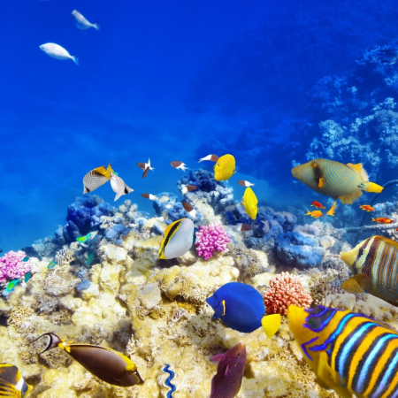

Yes! I do too! I think they can fly away sometimes. I saw one fly,

Do you wish that you could fly away from this all?
Find another sea so you could see the other fish?
What do you mean by other fish?
Go home.